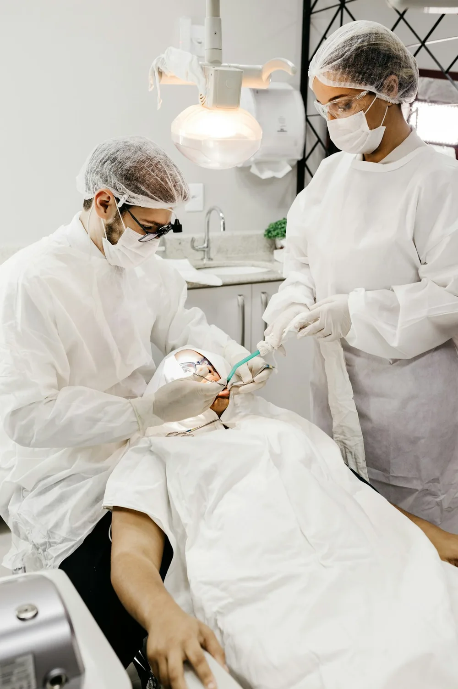

Забота об улыбке.
На каждом этапе.
Выберите, что вам сейчас важно. Мы поможем сориентироваться в направлениях лечения.
Не знаете, с чего начать? Начните с консультации.
Помочь выбрать специалиста
Иллюстративная фотография, UnsplashВы — больше,
чем план лечения.
В «» забота начинается с внимания к человеку. К вашим вопросам, ожиданиям и комфорту.
Как проходит первый приёмКаждой задаче —
свой специалист.
В клинике представлены основные профили стоматологии. Администратор подскажет, к кому обратиться с вашим вопросом.
Первый визит.
Всё по порядку.
Вам не нужно разбираться в стоматологии заранее. Начнём с разговора и вместе определим следующий шаг.
Начать с консультацииСначала ясность.
Потом решение.
Стоимость зависит от вашей задачи и выбранного лечения. Уточните актуальный прайс у администратора, а объём и этапы обсудите с врачом на консультации.
О чём спросить
на консультации
- Какие есть варианты лечения?
- Что входит в стоимость?
- Сколько этапов потребуется?
- Какие обследования нужны?
Открыть Яндекс Карты
Расположение клиники и маршрут доступны на карте.